Texto extraído da edição fornecida, sem atualização normativa. Consulte a página original para conferir tabelas, formulários e instruções ilustradas. A numeração dos links corresponde à página do arquivo PDF.
Esta página contém conteúdo gráfico. Consulte a reprodução original abaixo.
Ver página original — tabelas, imagens e diagramas
Esta página contém conteúdo gráfico. Consulte a reprodução original abaixo.
Ver página original — tabelas, imagens e diagramas
Orientação Consultiva
nº 27, de 1º de
dezembro de 1997
Nota Informativa nº
232, de 2 de maio de
2010
Orientação Normativa nº
02, de 23 de fevereiro de
2011 - SRH/MP. Alterada
pela Orientação Normativa
nº 10/14 - SEGEP (vide
citação desta normativa)
Nota Técnica nº
64/DENOP/SRH/MP , de
29 de julho de 2011
Nota Técnica nº 85, de
2 de dezembro de
2014
Orientação Normativa
nº 10, de 3 de
dezembro de 2014 –
SEGEP
Nota Informativa nº
50, de 1º de abril de
2015
Nota Técnica nº
68/15/CGNOR/DENOP
/SEGEP/MP
Nota Técnica nº 1078,
de 16 de maio de 2016
Portaria nº 1.114, de
31 de agosto de 2016-
Cmt Ex - (EB10 - IG -
01.019)-Art. 55
Nota Informativa
SEI/ME nº 3911, de 14
de abril de 2020
É dever do servidor/empregado público, da Organização Militar (OM) e da Região Militar (RM) ler e
acompanhar a atualização da legislação que se refere aos assuntos tratados neste Caderno de
Orientação.
Cabe ao gestor da unidade de gestão de pessoas, acompanhar as comunicações constantes do órgão
central do SIPEC (“COMUNICA”), no SIAPE.
Ver página original — tabelas, imagens e diagramas
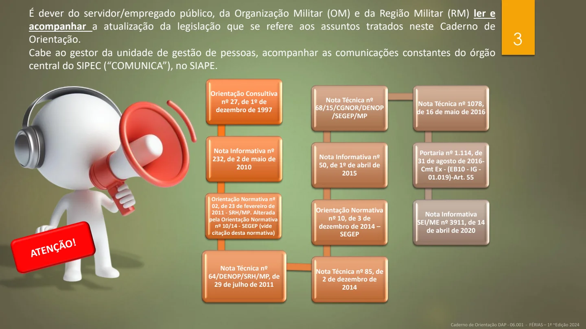
Período aquisitivo e usufruto
PDF · p. 4Esta página contém conteúdo gráfico. Consulte a reprodução original abaixo.
Ver página original — tabelas, imagens e diagramas
Período aquisitivo e usufruto
PDF · p. 5Considera-se período aquisitivo os 12 (doze)
meses de exercício exigidos para a aquisição das
primeiras férias.
As férias subsequentes deverão ser usufruídas em qualquer
mês do ano civil correspondente.
Quando?
Ver página original — tabelas, imagens e diagramas
Período aquisitivo e usufruto
PDF · p. 6As férias
equivalentes a
cada exercício
devem ter início
até o dia 31 de
dezembro.
Início do
exercício
Período
aquisitivo
Fim do
exercício
As férias relativas ao
primeiro período
aquisitivo
corresponderão ao
ano civil em que o
servidor completar
12 (doze) meses de
efetivo exercício.
servidores que operam direta e
permanentemente com Raios “X” ou substâncias
radioativas.
Ver página original — tabelas, imagens e diagramas
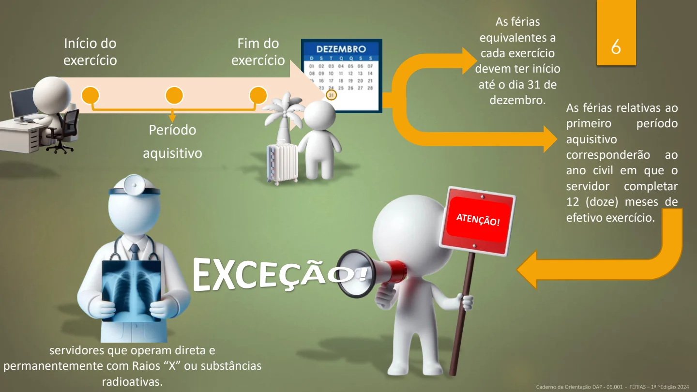
Período aquisitivo e usufruto
PDF · p. 7Se houver parcelamento, a
última parcela também
DEVE ser usufruída ATÉ o
dia 31 de dezembro.
1ª
Parcela
2ª
Parcela
3ª
Parcela
O servidor fará jus a
30 (trinta) dias de férias por
exercício.
30 dias
Ver página original — tabelas, imagens e diagramas
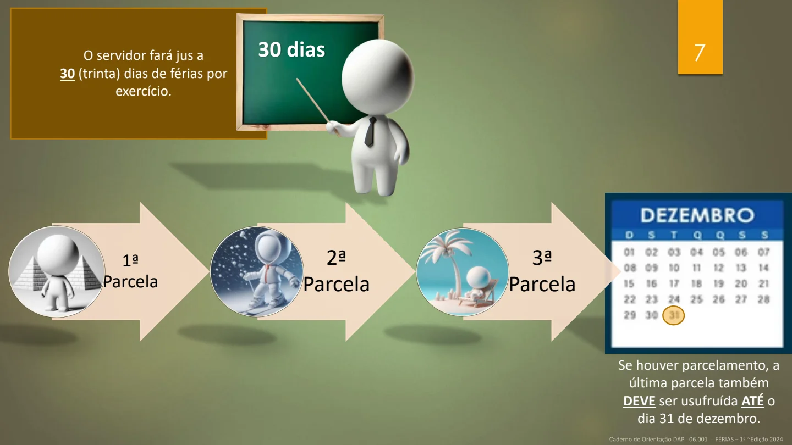
Período aquisitivo e usufruto
PDF · p. 8Servidores membros da
mesma família, lotados no
mesmo órgão PODEM
requerer férias no mesmo
período.
01
02
É vedado ao servidor realizar viagens
a trabalho no período de férias.
Exceções: Art. 80 da Lei nº 8.112,
1990.
Ver página original — tabelas, imagens e diagramas
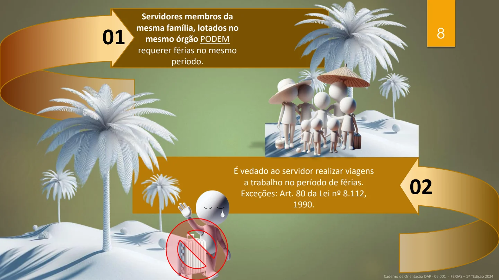
Período aquisitivo e usufruto
PDF · p. 9O servidor fará jus às férias relativas aos
períodos de licenças ou afastamentos,
observando-se o seguinte:03
04
Exceções para acumulação de férias
para o exercício seguinte:
Se as férias
programadas
coincidirem com os
períodos de licenças e
afastamentos, deve
haver reprogramação.
VEDADA a
acumulação para o
exercício seguinte.
licença à gestante, à adotante e
licença paternidade
licenças para tratar da
própria saúde,
exclusivamente para os
períodos considerados
de efetivo exercício,
conforme art. 102 da Lei
nº 8.112, de 11 de
dezembro de1990.
Ver página original — tabelas, imagens e diagramas
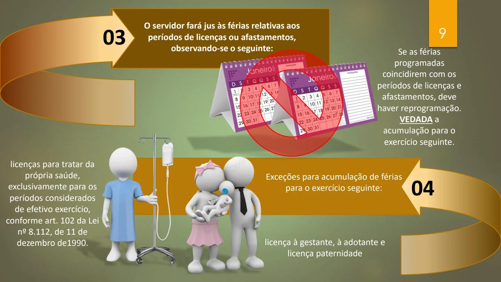
Período aquisitivo e usufruto
PDF · p. 1010Fará jus às férias o servidor em usufruto
de¹:03
licença para capacitação
afastamento para participação em
programa de pós-graduação stricto sensu no país ou
para estudo ou missão no exterior
¹Se não forem programadas, serão registradas e pagas a cada mês de dezembro.
Ver página original — tabelas, imagens e diagramas
Período aquisitivo e usufruto
PDF · p. 11No caso de o servidor entrar de licença pelos motivos
elencados abaixo, sem completar
doze meses de efetivo exercício, deverá concluir o
respectivo período quando de seu retorno:
¹Se não forem programadas, serão registradas e pagas a cada mês de dezembro.
tratamento de saúde de
pessoa da família,
RESSALVADOSos
primeiros 30 (trinta) dias,
considerados como de
efetivo exercício
atividade política, a partir do registro da
candidatura e até o décimo dia seguinte
ao da eleição, somente pelo período de
três meses
tratamento da própria saúde que
exceder o prazo de vinte e quatro
meses
por motivo de afastamento
do cônjuge
Ver página original — tabelas, imagens e diagramas
Situações específicas
PDF · p. 12Esta página contém conteúdo gráfico. Consulte a reprodução original abaixo.
Ver página original — tabelas, imagens e diagramas
Situações específicas
PDF · p. 13Servidores operam direta e permanentemente
com Raios “X” ou substâncias radioativas:
20 (vinte) dias de férias por semestre
01
02
Nestes casos, a acumulação de férias
é PROIBIDA
em qualquer hipótese.
20
+
20
Ver página original — tabelas, imagens e diagramas
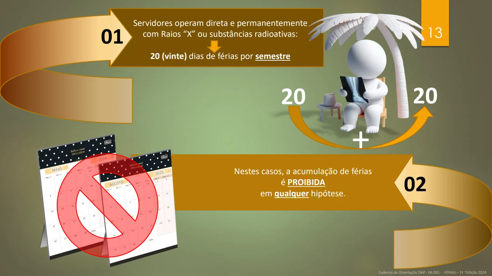
Situações específicas
PDF · p. 14O servidor que VENHA a operar com Raios "X" e
substâncias radioativas, e que já tenha
usufruído férias integrais dentro do exercício,
gozará 20 (vinte) dias de férias após seis meses
de exercício nas
atividades relacionadas.
03
04
Caso o servidor tenha usufruído 20 (vinte) dias
de férias relativas ao primeiro semestre
aquisitivo, e DEIXAR de operar com Raios "X"
e substâncias radioativas, lhe será assegurado
o direito de usufruir os 10 (dez) dias restantes,
após cumprido o período aquisitivo de doze
meses, correspondente ao
primeiro exercício de férias da nova atividade.
Ver página original — tabelas, imagens e diagramas
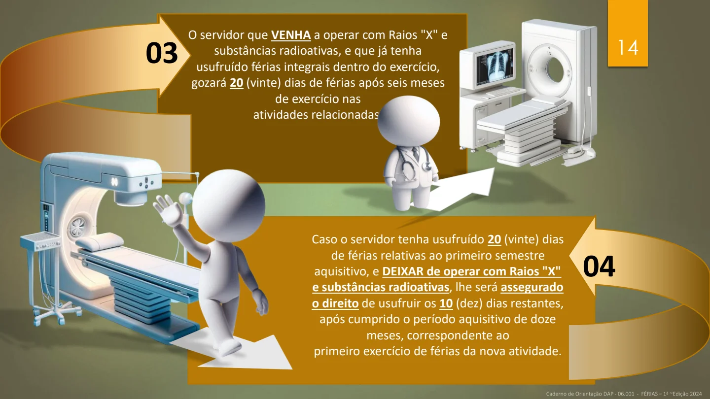
Situações específicas
PDF · p. 15SITUAÇÃO TEMPO DE FÉRIAS - DIREITO
Servidor afastado para o exercício de cargo ou função
comissionado em órgãos não integrantes das
instituições federais de ensino
30 (trinta) dias de férias por exercício
Servidor afastado para exercer cargo em comissão ou
função de confiança no ano civil, e que já tenha
usufruído parcela de férias relativa ao cargo efetivo
Fará jus aos dias restantes e, se for ocaso, com base
na legislação do cargo que estiver ocupando. Neste
caso, se o servidor for exonerado do
cargo em comissão durante o ano civil, fará jus ao
tempo residual relativo ao seu cargo efetivo
Se o professor operar direta e permanentemente
com Raios "X" e substâncias radioativas
45 (quarenta e cinco) dias, que devem ser gozados
semestralmente, em etapas de no mínimo
20 (vinte) dias cada.
15
O servidor integrante das carreiras de Magistério
Superior, Magistério do Ensino
Básico, Técnico e Tecnológico ou Magistério do
Ensino Básico Federal fará jus a
45 (quarenta e cinco) dias de férias por
exercício, quando no exercício das atividades de
magistério.
05
06
45 dias
Ver página original — tabelas, imagens e diagramas
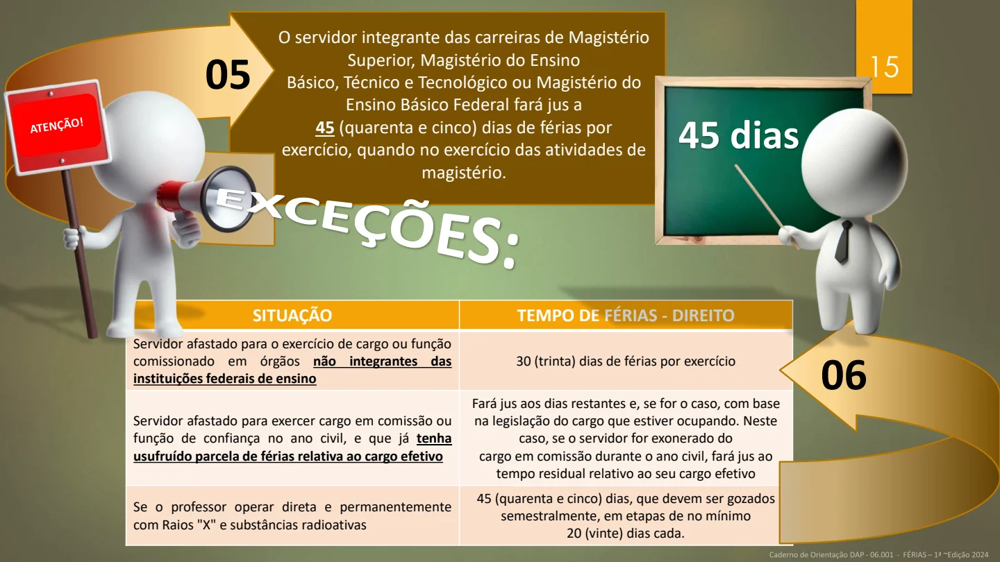
Situações específicas
PDF · p. 16O servidor amparado pelos institutos da
reversão, reintegração e recondução fará jus às
férias relativas ao exercício em que se der seu retorno,
não sendo exigido novo período aquisitivo de 12 (doze)
meses de efetivo exercício, para efeito de concessão de
férias no cargo, desde que tenha cumprido essa
exigência anteriormente.
07
08
Na hipótese de VACÂNCIA por posse
em outro cargo inacumulável, o
servidor que já tenha cumprido o
interstício de 12 (doze) meses de
efetivo exercício no cargo
anteriormente ocupado, fará jus às
férias correspondentes àquele ano civil
no novo cargo efetivo.
Ver página original — tabelas, imagens e diagramas
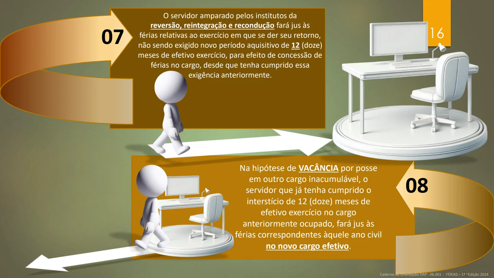
Situações específicas
PDF · p. 17Caso o servidor não tenha cumprido o interstício de
doze meses de efetivo exercício no
cargo anteriormente ocupado deverá complementar
esse período exigido para a concessão de férias no
novo cargo.
08.a
09
Na hipótese de VACÂNCIA por posse
em outro cargo inacumulável, o
servidor que já tenha cumprido o
interstício de 12 (doze) meses de
efetivo exercício no cargo
anteriormente ocupado, fará jus às
férias correspondentes àquele ano civil
no novo cargo efetivo.
Ver página original — tabelas, imagens e diagramas
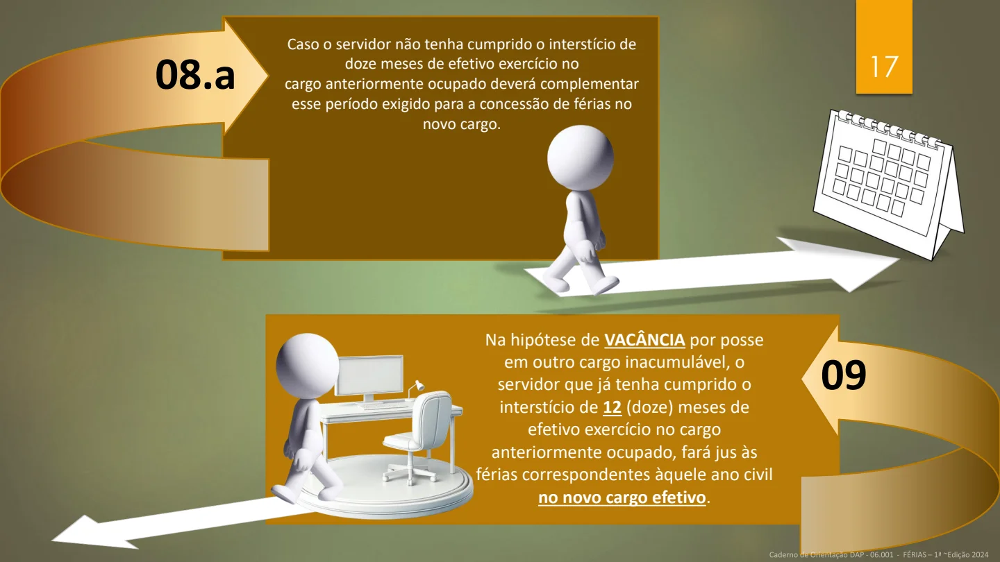
Situações específicas
PDF · p. 1818Para a concessão das férias a servidor ou empregado
CEDIDO OU REQUISITADO, o órgão ou
entidade cessionária deve:
10
Nome Cargo Período Aquisitivo Período de
Usufruto
José Analista 20/10/2023 – 19/10/2024 Dez 2024
Maria Técnico 5/6/2023 – 4/6/2024 Nov 2024
Nara Professor 8/4/2023 – 7/04/2024 Junho 2024
Will Médico 24/9/2023 -23/9/2024 Out 2024
Incluir as férias do servidor ou empregado na
programação anual
Proceder à inclusão das férias no
SIAPE, quando o servidor ou
empregado for exercer cargo em
comissão ou função de confiança, ou
quando o órgão ou entidade cedente
for integrante do sistema
Início do
exercício
Fim do
exercício
Observar o período aquisitivo do
órgão ou entidade cedente
Ver página original — tabelas, imagens e diagramas
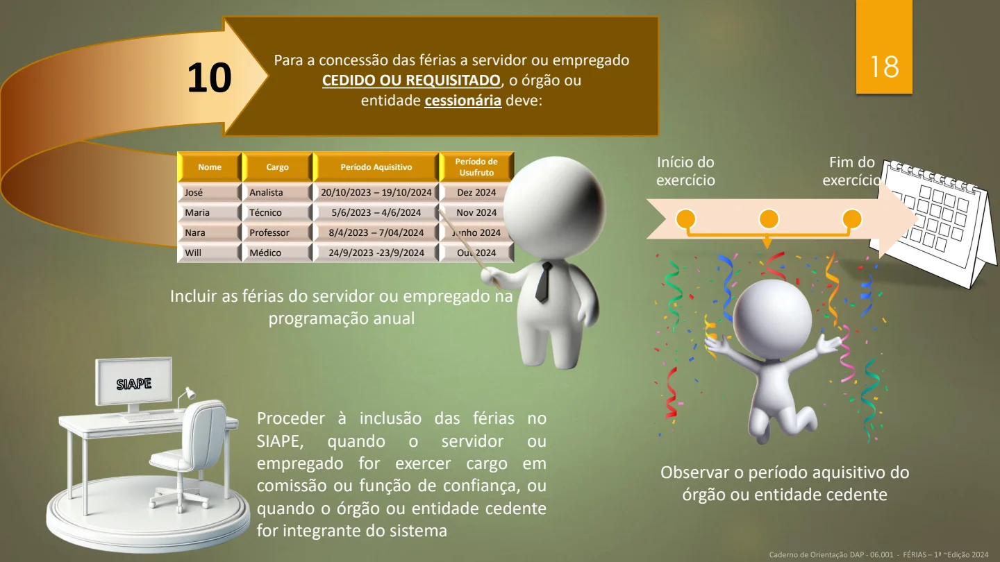
Programação e parcelamento
PDF · p. 19Esta página contém conteúdo gráfico. Consulte a reprodução original abaixo.
Ver página original — tabelas, imagens e diagramas
Programação e parcelamento
PDF · p. 20A programação de férias, integral ou parcelado em até três etapas, deve ser
autorizada pela chefia imediata e constar no Plano Anual de Férias (PAF) da OM.
O parcelamento requerido pelo servidor poderá ser concedido pela chefia
imediata que estabelecerá, em comum acordo, o número de etapas e respectiva
duração, observado o interesse da administração.
Nome Cargo Período Aquisitivo Período de
Usufruto
José Analista 20/10/2023 – 19/10/2024 Dez 2024
Maria Técnico 5/6/2023 – 4/6/2024 Nov 2024
AGO 2024
Nara Professor 8/4/2023 – 7/04/2024 Junho 2024
Will Médico 24/9/2023 -23/9/2024 Out 2024
A critério da chefia imediata, as férias podem
ser reprogramadas.
Todas as parcelas das férias devem ser programadas de uma só vez.
PLANEJAMENTO
DE FÉRIAS
Ver página original — tabelas, imagens e diagramas
Programação e parcelamento
PDF · p. 21PLANEJAMENTO DE FÉRIAS
1ª
PARCELA
2ª
PARCELA
3ª
PARCELA
X
X
X
21
45 dias
/3
É facultado ao servidor integrante das carreiras de magistério
superior ou magistério do ensino básico, técnico e tecnológico
ou magistério do ensino básico federal o parcelamento de
férias em 3 (três) etapas.
A reprogramação de férias de servidor acusado em processo de sindicância ou processo
administrativo disciplinar poderá ser solicitada pelo Presidente da Comissão à chefia
imediata do servidor, caso julgue necessário.
É VEDADA A CONCESSÃO DE LICENÇA OU AFASTAMENTO, a
qualquer título, durante o período das férias, ressalvadas as
licenças à gestante, à adotante, paternidade e as licenças para
tratar da própria saúde, exclusivamente para os períodos
considerados de efetivo exercício, conforme art. 102 da Lei nº
8.112, de 11 de dezembro de 1990.
Ver página original — tabelas, imagens e diagramas
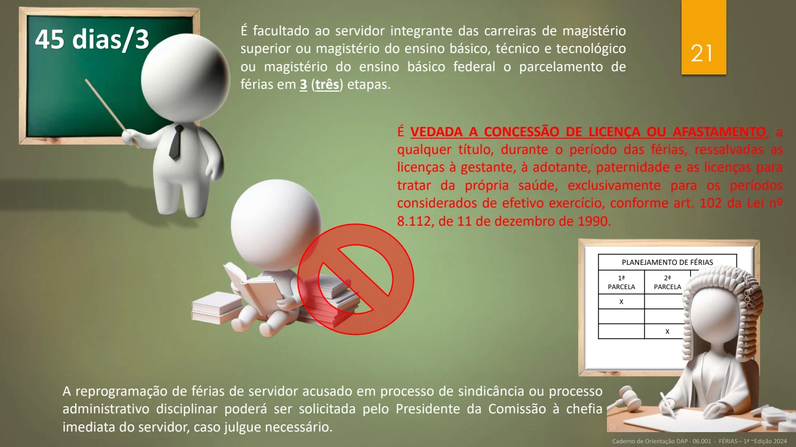
Programação e parcelamento
PDF · p. 22Para consulta, marcação, alteração e homologação de férias, o
servidor deverá utilizar SouGov, no app ou pelo computador no
link: www.gov.br/sougov
ACESSO AO SOUGOV.BR – Para acessar o aplicativo ou sua
versão web, o servidor precisará se identificar no gov.br com
seu login (Digite seu CPF para criar ou acessar sua conta
gov.br);
Em caso de dúvidas, consulte as orientações disponíveis em
https://www.gov.br/servidor/pt-br/acesso-a-
informacao/faq/acesso-gov.br/acesso-gov.br.
Ver página original — tabelas, imagens e diagramas
Acumulação e interrupção
PDF · p. 23Esta página contém conteúdo gráfico. Consulte a reprodução original abaixo.
Ver página original — tabelas, imagens e diagramas
Acumulação e interrupção
PDF · p. 241.ACUMULAÇÃO:
Em caso de NECESSIDADE DO SERVIÇO, as férias PODEM ser
acumuladas em até dois períodos.
As férias
correspondentes a cada
exercício devem ser
gozadas ATÉ o dia 31 de
dezembro.
Por EXCEPCIONALIDADE, será
permitida a acumulação de férias para
o exercício seguinte, nos casos de:
licença à
gestante, à
adotante e licença
paternidade
licenças para tratar
da própria saúde,
exclusivamente para
os períodos
considerados de
efetivo exercício,
conforme art. 102 da
Lei nº 8.112, de 11 de
dezembro de 1990
Ver página original — tabelas, imagens e diagramas
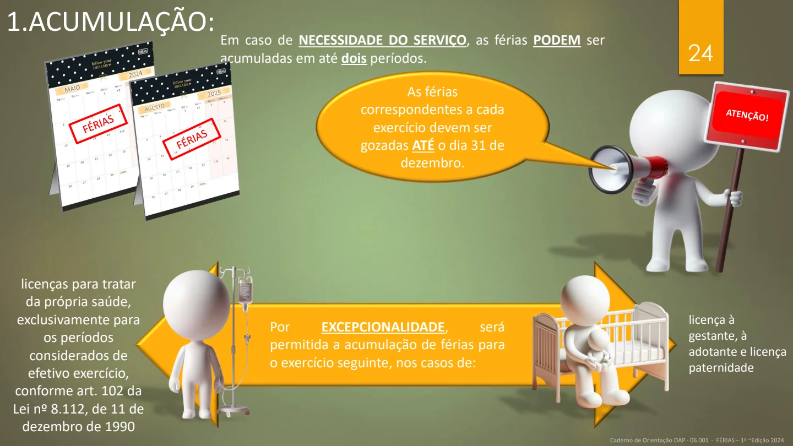
Acumulação e interrupção
PDF · p. 251.INTERRUPÇÃO:
As férias somente poderão ser
interrompidas por motivo de¹:
calamidade pública ou
comoção interna
convocação para júri
serviço militar ou eleitoral
necessidade do serviço declarada pela
autoridade máxima do órgão ou entidade.
¹O restante do período integral ou da etapa, no caso de parcelamento, será gozado de uma só vez, sem qualquer pagamento adicional dentro do mesmo exercício.
Ver página original — tabelas, imagens e diagramas
Pagamento e indenização
PDF · p. 26Esta página contém conteúdo gráfico. Consulte a reprodução original abaixo.
Ver página original — tabelas, imagens e diagramas
Pagamento e indenização
PDF · p. 27É vedado descontar nas férias qualquer falta ao serviço.
A remuneração das férias será correspondente à
remuneração do período de gozo das férias, tomando-se
por base a sua situação funcional no respectivo período,
inclusive na condição de interino, e será acrescida do
valor integral do adicional de férias, correspondente a
um terço da remuneração.
+ 1/3
Quando ocorrer alteração da situação funcional ou remuneratória em qualquer das etapas de
gozo das férias, o acerto será efetuado proporcionalmente aos dias do mês em que ocorreu o
reajuste ou alteração.
_a_
b
_a_
b=
Ver página original — tabelas, imagens e diagramas
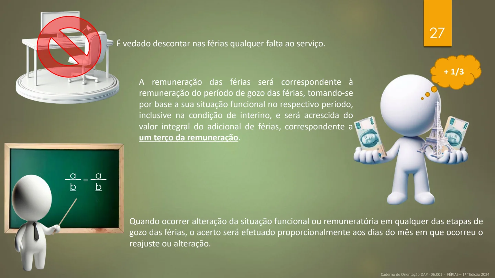
Pagamento e indenização
PDF · p. 28O imposto de renda retido na fonte sobre a remuneração das férias
(antecipação de férias e adicional de férias) será calculado separadamente
dos demais rendimentos, considerando-se as deduções previstas na
legislação em vigor e a tabela de retenção vigente no mês de seu
pagamento.
Será concedida
indenização¹ de
férias nas
seguintes
hipóteses:
não usufruto das férias em razão de
exoneração de cargo efetivo ou em
comissão e de natureza especial
aposentadoria
destituição de cargo em comissão
ou demissão de cargo efetivo
falecimento do servidor
¹A indenização de férias será calculada sobre a
remuneração do mês correspondente à data
da vacância.
Ver página original — tabelas, imagens e diagramas
Programação no SouGov
PDF · p. 29PARTE VII
DA
PROGRAMAÇÃO:
TRAMITAÇAO¹
PLANEJAMENTO DE FÉRIAS
¹A programação de férias, integral ou parcelado em até três etapas, deve ser autorizada pela chefia imediata e constar no Plano Anual de Férias (PAF) da OM.
Ver página original — tabelas, imagens e diagramas
Programação no SouGov
PDF · p. 301) Após autorização da chefia imediata e inclusão do pedido
no PAF, confeccionado e publicado pela OM, em Boletim
Interno, acesse o SOUGOV.BR, aplicativo ou web, em
"Autoatendimento", clique no ícone "Férias", escolha o
exercício e, em "Programar Férias", selecione o período
permitido para a programação¹:
¹Fonte: Portal do Servidor - https://www.gov.br/servidor/pt-br/acesso-a-informacao/faq/sou-gov.br/ferias/como-programar-solicitar-minhas-ferias
2) Leia com atenção a mensagem, informe a data e a quantidade de
dias (você poderá parcelar suas férias em até 03 períodos). Clique no
botão "Programar Férias":
Ver página original — tabelas, imagens e diagramas
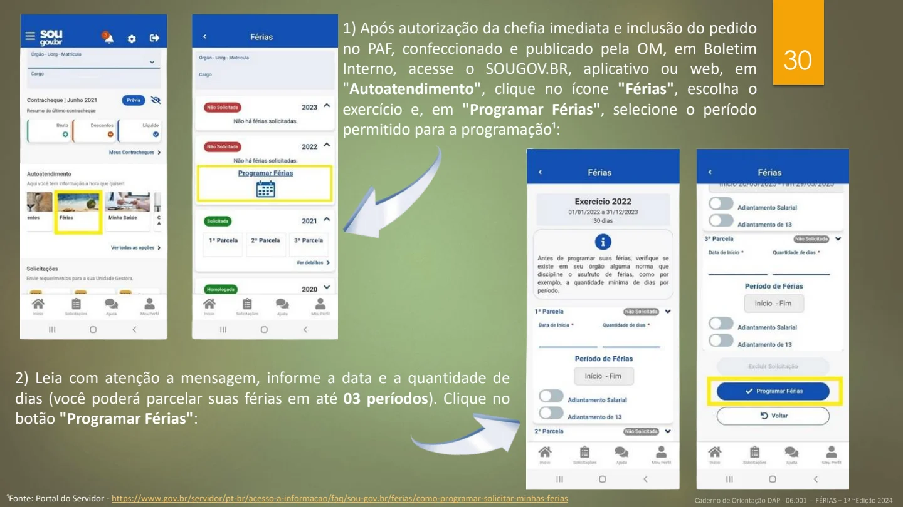
Programação no SouGov
PDF · p. 31¹Fonte: Portal do Servidor - https://www.gov.br/servidor/pt-br/acesso-a-informacao/faq/sou-gov.br/ferias/como-programar-solicitar-minhas-ferias
3) Selecione "Confirmar" para que sua programação
de férias seja enviada para homologação de sua chefia.
Não se esqueça de ler atentamente a mensagem
apresentada:
4) após Programar, é possível visualizar o extrato de férias.
No "Autoatendimento", em "Férias", selecione o exercício e
clique em "Ver detalhes":
Ver página original — tabelas, imagens e diagramas
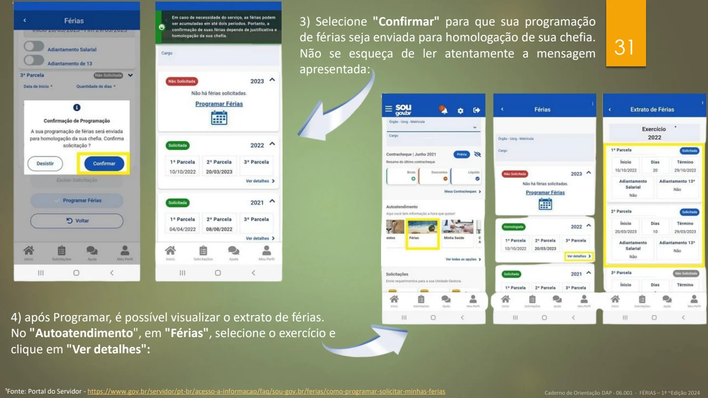
Homologação no SouGov
PDF · p. 32PARTE VIII
DA HOMOLOGAÇÃO:
TRAMITAÇAO¹
¹Fonte: Colabora Gov: https://www.gov.br/servicoscompartilhados/pt-br/servicos/catalogo-de-servicos/03_homologacao-ferias-no-sougov-br_funcao-lider.pdf
Ver página original — tabelas, imagens e diagramas
Homologação no SouGov
PDF · p. 331) Após a programação de férias, realizada pelo
servidor no SouGov, a OM deverá homologar o
pedido também na plataforma.
Acessar a Plataforma SOUGOV.BR, em
https://sougov.economia.gov.br/sougov
ou pelo aplicativo para celular, e clicar em
“Entrar com gov.br”.
2) Digitar o seu CPF e clicar em “Continuar”
ou identificar-se com outras opções.
3) Clicar no ícone “Líder”.
Ver página original — tabelas, imagens e diagramas
Homologação no SouGov
PDF · p. 34344) Verificar no campo “Férias a Homologar” a relação de
servidores que solicitaram a programação de férias.
Selecionar o servidor cujas férias queira analisar.
Clicar na seta, ao lado do nome do servidor, para
ver os períodos solicitados.
Ver página original — tabelas, imagens e diagramas
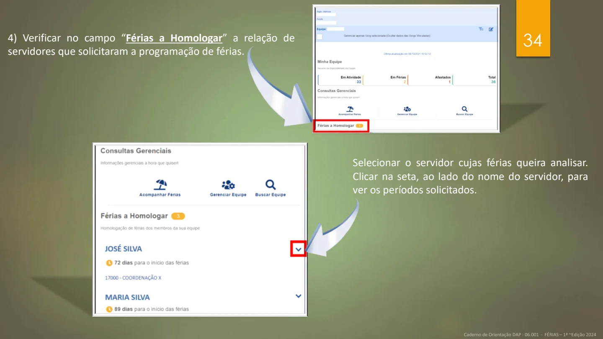
Homologação no SouGov
PDF · p. 35356) Verificar as informações de férias e decidir entre “Homologar (1)”
ou “Recusar (2)”.
7) Clicar em “Homologar (1)” e “Confirmar (2)” sua decisão.
Ver página original — tabelas, imagens e diagramas
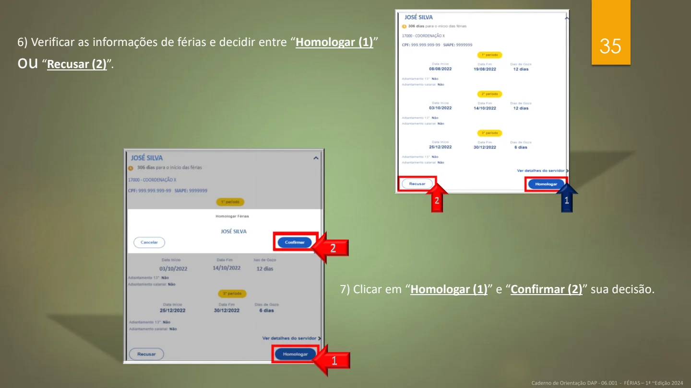
Homologação no SouGov
PDF · p. 368) Caso tenha selecionado “Recusar”, justificar a
recusa e clicar em “Confirmar”.
9) Automaticamente, você será redirecionado para a página
anterior.
Ver página original — tabelas, imagens e diagramas
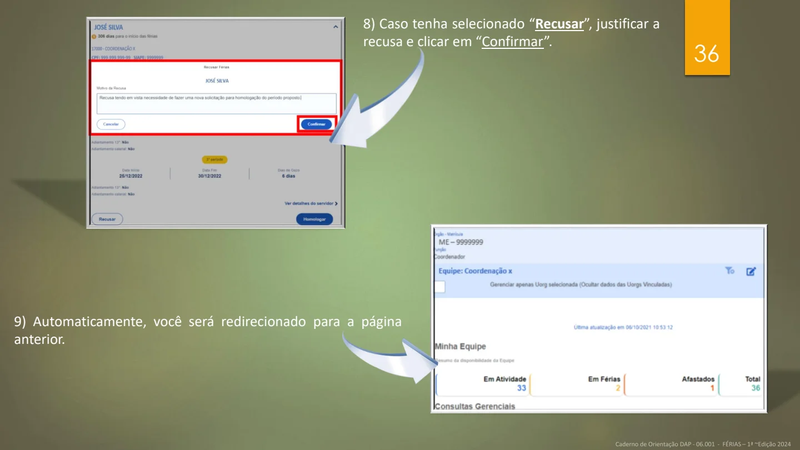
Fontes e elaboração
PDF · p. 37ELABORAÇÃO:
ASSESSORIA TÉCNICA DA SPC/DAP
SETEMBRO DE 2024
Para conhecer melhor o assunto, leia as
legislações indicadas no início deste caderno, disponíveis no link:
https://legis.sigepe.gov.br/legis/pesquisa-avancada
Caderno de Orientação DAP - 06.001 - FÉRIAS – 1ª ~Edição 2024
Ver página original — tabelas, imagens e diagramas
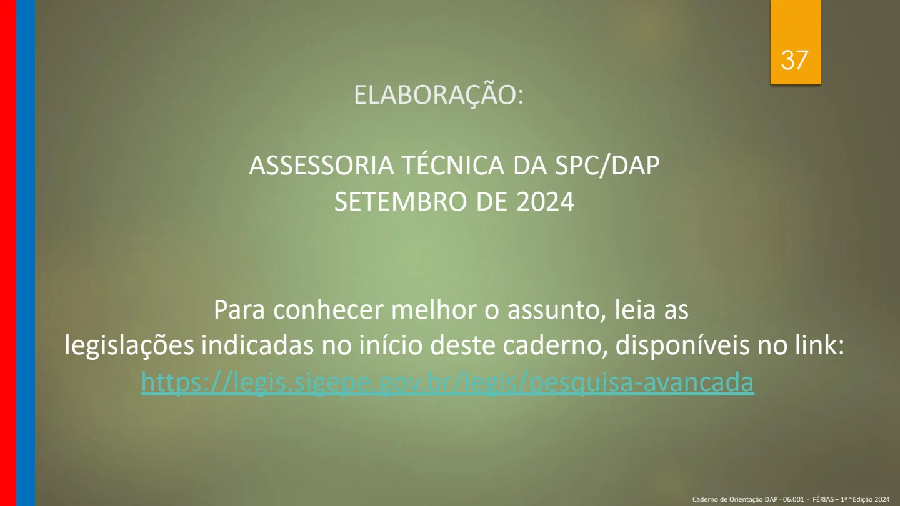